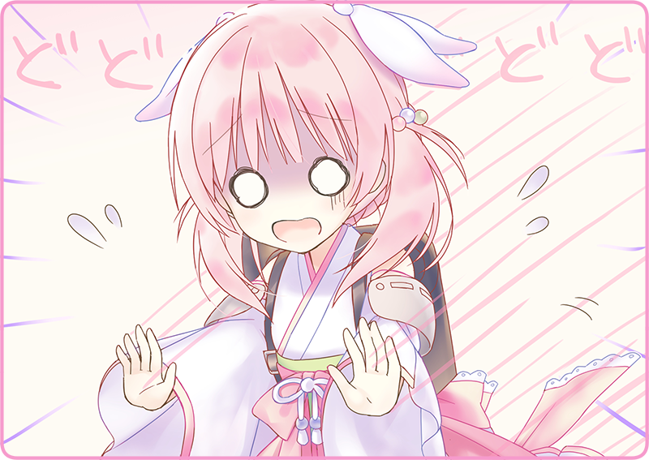

沸き立つケトルを手に取ると、そっと優しくドリッパーに湯を落とす。
細い注ぎ口からじゅっという音と共に蒸気が昇る。挽き立ての珈琲豆がふわりと膨らんで、香ばしい匂いが厨房中に拡がった。
自分で言うのもなんだけど、なかなか手慣れてきたと思う。
コーヒーカップに移して試飲してみる。ざらめ糖は大さじ２杯。どっしりとしたコクと甘さが感じられて、なんとも落ち着く味わいだった。
開け放たれた小窓からは、春の匂いが漂ってくる。裏手にある小さな桜も満開を迎えており、ごくさりげなくその枝を覗かせて、小ぶりの花びらを揺らせている。
珈琲を傾けながら外を眺めていると、灰桜の声。
片手には砂糖壺やカトラリーの入ったバスケット。開店前にテーブルウェアを整えてくれていたのだ。
「それって桃色だから？」
「なるほどねぇ」
自律人形は油で動く。いちごクリームも燃料になるのかもしれない。
「桜は食べられるんだよ？」
「花びらも食べられるし、なんだったら葉っぱも。バニラみたいな甘い香りがするんだよ」
目を丸くして驚いている。
バスケットを片付けている灰桜。
そのまま裏口から、意気揚々と出かけていった。
小窓から覗く桜は、さっきよりもゆさゆさと揺れている……。
「灰桜、食べちゃダメだよ！」
慌てて後を追うと、声を上げた。
時既におそし。
灰桜の口内には、葉っぱと花房が詰め込まれていた。
「そのまま食べられないんだよ……」
えぐえぐしながらえづいている。
目尻には涙まで滲んでいる。実際には冷却液らしいけれど。
「ほら、吐いて。毒もあるよ」
涙目になって、青くなっている灰桜。
とにかく背中をさすってやろうと思ったが、手に触れたのは冷たい背嚢の感触。消化器官には違いないので、一応なでなでしておいた。
＊ ＊ ＊
「むむむ……」
鏡の前で、むにむにとほっぺたを触っている鴉羽。
「……えへ」
すこし首を傾げて、にっこりと破顔。
「うん、笑顔よし」
くるりとスカートを踊らせて、こちらに向き直る。
「じゃあ、今日も一日頑張っていきましょうっ！」
鴉羽の明るい声がフロアに響く。
「はいっ！」
続いて、灰桜の元気な声。
「了解であります」
月下はいつものクールな様子。
「食事の仕込みもバッチリだよ」
エプロンをきゅっと締め直すと、気持ちも新たになる。
「喫茶黒猫亭、開店します！」
さっそくドアベルの音が響く。
今日一番目のご来客だ。
口元に手を添えると、ぺっぺと吐き出させる。
自律人形と、そしてそこに混じったボクの声が出迎えていた。
※ ※ ※
それから数日が経った。
「朝は多少忙しいんだけどなぁ……」
きぃ、と丸椅子が軋んだ音を立てる。
厨房の中、若干時間を持て余して、小窓からフロアを覗き込む。
客足はまばらだ。
数日間勤務して分かったことだが、黒猫亭は基本的に常連客に支えられている。
例えばいま窓際で、本を読んでいる銀縁眼鏡の紳士。
黒い背広に、黒いネクタイ。傾けるのはいつもブラックコーヒー。
昨日もいたし、一昨日もいたし、何だったらずっとこの時間あの場所にいる気がする。
そういうお客さんは他にもいて、ぱっと思いつく顔がいくつもある。
でも、それ以外の一見さんがいるかというと、あまり記憶にない。
「おっと、もうこんな時間か」
フロアの壁影時計が、ぼーんぼーんと低い音を立てる。
「ということは、きっと……」
ボクの手は、自然と冷蔵庫に伸びる。
ひんやりとした冷気を感じながら氷の塊を取り出すと、アイスピックで砕き始める。
小さな氷を２～３個グラスに入れる。くるくると回すと、たちまちグラスが汗をかきはじめた。
月下が小窓から、注文伝票を差し出す。
「はいよ」
やっぱりだ。
ちらりとフロアを覗くと、新聞を片手に持った女性が席に腰をおろしている。
フェルトの帽子にパンツスタイル。彼女も常連客の一人だ。記者さんか、はたまた弁理士さんか。仕事が終わるこの時間、決まってティーパンチを頼むのだ。
今朝からりんご、レモン、みかんを漬け込んでおいた紅茶ポットを取り出す。改めてグラスを氷でいっぱいにして、琥珀色を半ばまで。ソーダを注意深く注いで、最後に飾りのレモンを……。
「……そうだ」
ふと、あることを思いつく。
冷蔵庫を確認すると、ちょうど食べごろだった。
ぺこりとお辞儀をして、月下が給仕をする。
反応が気になって、厨房から顔を出して、そんな様子を眺めていた。
コースターの上に、そっとグラスを置く。
フロア接客は基本的に月下と灰桜のお仕事だ。基本的に月下は仕事が確実で、間違いというものがない。
もっとも愛想はないので、ニコニコしている灰桜の存在は貴重だったりする。いまも壁際に控えて、レコードの音に合わせて揺れていた。こっちに気づいて、小さく手を振ってくれる。くすんだ桜色の髪が揺れる。
「あら？」
新聞から目を外すと、早速女性は気づいた。
「いつもと違うのね」
「春だから？」
「そう、ありがとう」
くすりと微笑むとグラスを覗き込んでいる。
「桜の花びらなんて、洒落ているわね」
甘いティーパンチの中。炭酸の泡をすこしまとわせて、桜の花房が浮いていた。
薄くリップを引いた唇を、ストローに近づけると、そして……。

「ぶっ！」
どどどどどど、と灰桜が駆け寄っていた。
思わずむせ返っている女性客。
さすさすと背中を擦っている。
レジカウンターで帳簿をつけていた鴉羽が、騒ぎを聞きつけて飛んでくる。
ちょっとした騒動になっている。
我関せずといった様子で、とことこと月下がやってくる。
ちらり、と横目を女性客の方へ。
「ごめん、ボクのせいで……説明してくるよ、うん……」

 「桜って、なんだかおいしそうですね」
「桜って、なんだかおいしそうですね」
 「「「いらっしゃいませ！」」」
「「「いらっしゃいませ！」」」